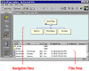
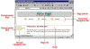
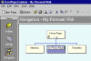
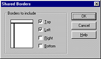
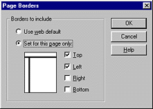
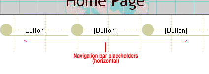
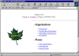
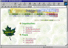

|
| ||
|
| ||
A useful and intuitive navigation structure is the key to a winning Web site. Microsoft FrontPage 98 offers several features to help you achieve this goal. This document illustrates how you can use a combination of these features to create a more consistent and dynamic navigation structure. The benefits are twofold: Webmasters spend less time maintaining the hyperlinks in their FrontPage-based Web site when pages are added, moved, or deleted, and end users are able to navigate the site more easily.
Creating a consistent navigation structure is achieved through the combination of five major FrontPage features:
The Navigation view in the FrontPage Explorer is where you create the navigation structure for a FrontPage-based Web site. This view consists of a split-screen display that shows the hierarchical structure of the pages in your Web site in the upper half of the screen (the Navigation pane), and a familiar Windows Explorer-like file and folder list in the lower half of the screen (the Files pane).

Click image to enlargeYou can create the structure for your FrontPage-based Web site whether you already have existing content or not. Do one of the following:
The Navigation view enables page banners and navigation bars by default. Page banners display the page title -- a descriptive name for each page in your FrontPage-based Web site. Navigation bars are textual or graphical hyperlinks that provide access to the other pages in your FrontPage-based Web site.
FrontPage places page banners and navigation bars inside shared borders -- page regions at the top, left, right, or left margins that can contain text or graphics. The benefit of using shared borders is that their contents are displayed in a consistent location throughout all pages. However, you can move page banners and navigation bars out of the shared borders and place them anywhere on your pages.
Page banners and navigation bars are greatly enhanced by themes -- professionally designed graphics and color schemes that replace text labels and hyperlinks with graphic designs.
When you create a FrontPage-based Web site in the Navigation view, shared borders, page banners, and navigation bars are automatically enabled. By default, each page contains a page banner and a horizontal navigation bar in the top shared border and a vertical navigation bar in the left shared border. The appearance of these elements is based on the theme that has been applied to your FrontPage-based Web site.

Click image to enlargeYou can quickly and easily modify the settings for these elements to customize the appearance of your pages. You use the FrontPage Explorer to change cross-Web settings that apply to all pages in your FrontPage-based Web site, and you use the FrontPage Editor to override Web defaults for individual pages. Here's how:
The page banner displays the page title of the current page. FrontPage places page banners into shared borders by default to display the page banners in a consistent location. However, page banners do not require shared borders. They can be placed anywhere on your pages.
To insert a page banner on a page, choose FrontPage Components on the FrontPage Editor's Insert menu, select Page Banner, and then click OK. In the Page Banner Properties dialog box, choose Image if a theme has already been applied to the current FrontPage-based Web site. Otherwise, choose Text and then click OK to insert the banner.
Deleting a page banner from within a shared border will delete it from all other pages in your FrontPage-based Web site. To hide a page banner on a page without affecting the other pages, turn off the top shared border containing the page banner. In the FrontPage Editor, choose Shared Borders on the Tools menu and then select Set for this page only. Clear the Top check box and then click OK.
A page title is a descriptive or friendly name for a page. In the example below, the first page has a page title called Home Page. This is more descriptive than the file name of the page (Default.htm). Page titles are displayed in the Navigation view, in page banners, and on navigation bar buttons. You can edit or change the page title in the FrontPage Explorer's Navigation view. Page titles should be kept relatively short so they will fit on navigation bar buttons.

Click image to enlargeIn the Navigation view, click the page title you want to change and press F2. You can also right-click a page in this view and choose Rename from the shortcut menu. When the page title is active and the cursor appears, type the new page title and then press ENTER. The next time you open this page in the FrontPage Editor, the page banner and the navigation bar buttons linked to this page will display the new page title.
NOTE: There is another type of title that can be assigned to pages, but this does not affect navigation structure. In the FrontPage Editor's Page Properties dialog box, you can specify a title to identify the contents of the current page to the user (for example, "Links to Other Archaeology Sites"). This type of title is displayed in the title bar of the user's Web browser window and is used to describe the page if it is added to the user's Favorites list.
Shared borders are page regions containing common text or graphics that are consistently displayed on all the pages in a FrontPage-based Web site. For example, to have a company logo appear at the top of each page, placing it once within a top shared border eliminates the need to manually add the logo on every page. This is not only convenient, but also ensures formatting consistency.
A page can have up to four shared borders -- top (header), bottom (footer), left (margin), and right (margin). You can choose any combination of borders or turn them off completely. To set global shared borders options for the current FrontPage-based Web site, choose Shared Borders on the FrontPage Explorer's Tools menu.

The borders you choose here will be applied to all pages in your current FrontPage-based Web site.
Occasionally, you may need to change a shared border setting for an individual page. For example, if you don't want to display your company logo on a certain page, you can override the Web default for shared borders and remove the top shared border containing the logo. Choose Shared Borders on the FrontPage Editor's Tools menu and then select Set for this page only.

Select only the check boxes for the borders you want to display on the current page. If you clear all four options, the current page will not contain any shared borders.
Although FrontPage places page banners and navigation bars into shared borders by default, this is not required. Page banners and navigation bars can be placed anywhere on your pages.
Navigation bars are groups of graphical or textual hyperlink "buttons" that appear on the main pages in a FrontPage-based Web site. FrontPage places navigation bars into shared borders by default to display the navigation bars in a consistent location. However, navigation bars do not require shared borders. They can be placed anywhere on your pages.
The buttons on a navigation bar are determined by the relative position of the current page in relation to the remaining pages in the navigation structure. These relations are referred to as Parent Level, Same Level, Back and Next, Child Level, Top Level, Home Page, and Parent Page. To include or omit a level of pages from navigation bars, double-click the navigation bar on the current page to display the Navigation Bar Properties dialog box. To change the hierarchical levels of pages in the navigation structure of your FrontPage-based Web site, switch to the Navigation view in the FrontPage Explorer and drag pages to their appropriate positions in the Navigation pane.
The default home page navigation bar is displayed with plain text labels, even when a theme is applied to the current FrontPage-based Web site. You can change this by double-clicking the navigation bar and selecting Buttons instead of Text as the preferred appearance of the hyperlinks. However, to display graphical buttons, your FrontPage-based Web site must have a theme applied.
Because each page contains a top shared border and a left shared border by default, FrontPage displays three "[Button]" placeholders below the banner on the home page. These placeholders indicate the position of horizontal navigation bars that will appear on the other pages in your FrontPage-based Web site.

Pages whose navigation bars display placeholders in the FrontPage Editor will not generate visible navigation bar buttons in a Web browser.
Deleting navigation bars from within a shared border will delete them from all other pages in your FrontPage-based Web site. To hide a navigation bar on a page without affecting the other pages, turn off the shared border containing the navigation bar. In the FrontPage Editor, choose Shared Borders on the Tools menu and then select Set for this page only. Clear the check box for the shared border containing the navigation bar you want to hide and then click OK.
FrontPage includes a gallery of professionally designed graphics and color schemes -- called themes -- which can be applied to any FrontPage-based Web site. When applied, a theme can dramatically enhance the appearance of page banners and navigation bars by replacing text labels with graphic designs.
Compare the appearance of the following page containing shared borders, page banners, and navigation bars. In the first example, the absence of a theme causes the page banner and navigation bars to appear text-based.

Click image to enlargeWhen a theme is applied to the FrontPage-based Web site containing this page, the page elements above appear dramatically different.

Click image to enlargeApplying a theme only changes the appearance of page elements. It is safe to experiment with the different themes FrontPage 98 offers before committing to a design. To choose a theme, click Themes on the FrontPage Explorer's Views bar. In the Themes view, select a theme from the list to preview the design and then click Apply to apply the selected theme to the current FrontPage-based Web site. When the theme has been applied, the appearance of page banners and navigation bars is updated automatically.
Occasionally, you may need to change the theme setting for an individual page only, or you may want to completely remove the theme from specific pages. To override the default Web theme, choose Theme on the FrontPage Editor's Format menu. To change the current theme, select a new one from the list and then click OK. To remove the current theme, select This page does not use themes and click OK. To restore the current page with the Web theme, choose Use Theme from current Web and click OK.
Invite friends or co-workers to "test-drive" your site's navigation structure before you publish it on the World Wide Web. And feel free to experiment with the tools FrontPage provides. If you don't like a change you've made, you can use the Undo feature on the menus and toolbars of the FrontPage Editor and the FrontPage Explorer.
We hope this document was useful to you. In response to frequently asked questions, Microsoft has prepared a number of knowledge base articles on this subject. Click the hyperlinks below to view these articles. For the most up-to-date list of knowledge base articles, please visit http://support.microsoft.com/support/default.asp  .
.
Visit the Microsoft FrontPage home page at http://www.microsoft.com/frontpage/  for more tips on using FrontPage 98.
for more tips on using FrontPage 98.
Did you find this material useful? Gripes? Compliments? Suggestions for other articles? Write us!
© 1999 Microsoft Corporation. All rights reserved. Terms of use.